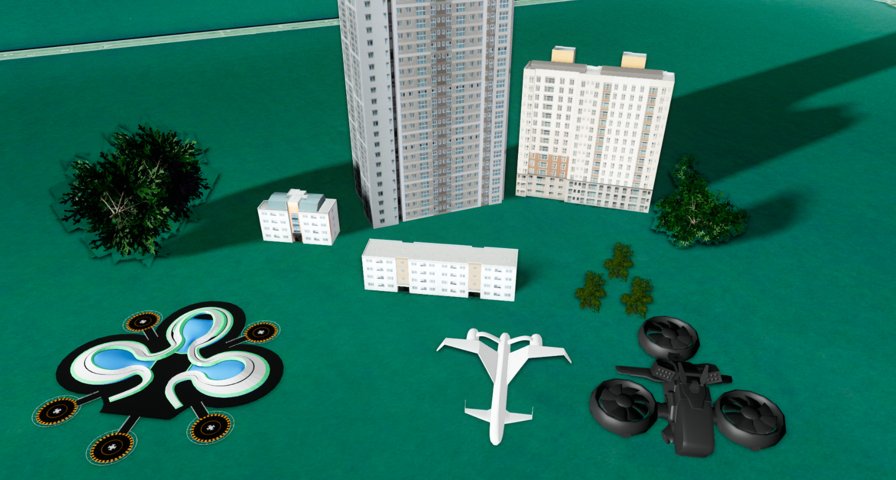

Component 용어 설명

GeOnDT의 Component는 하나 이상의 Mesh와 속성 및 동작을 하나의 기능 단위로 관리하는 객체입니다. 건물, 나무, 자동차, 드론, 센서와 같은 시설물을 3D 공간에 배치하고 개별적으로 제어할 때 사용합니다.
목차
1. 3D 에셋
3D 에셋(3D Asset): 건물, 나무, 자동차 등의 형태와 재질을 표현하는 원본 3D 파일입니다. GeOnDT의 컴포넌트 레이어는 3ds, obj, glb, fbx 등의 파일 형식을 사용할 수 있습니다.
에셋은 아직 지도 위에 배치된 사물이 아닙니다. 위치, 회전, 크기와 같은 배치 정보가 없으며, 컴포넌트를 생성할 때 공유하는 원본 리소스입니다.
컴포넌트 레이어에 에셋을 등록할 때는 다음 정보를 가진 ModelDataInfo를 사용합니다.
name(string) : 레이어 안에서 3D 에셋을 구분하는 이름baseurl(string) : 3D 에셋 파일을 불러올 기본 URLfileName(string) : 확장자를 포함한 원본 파일명ext(string) :3ds,obj,glb,fbx등의 파일 형식
하나의 3D 에셋을 등록한 뒤 서로 다른 위치, 회전, 크기를 가진 여러 컴포넌트를 생성할 수 있습니다. 에셋 등록 방법은 3D 공간에 사물 출력 - 데이터 등록하기를, 컴포넌트 생성 방법은 3D 공간에 사물 출력 - 컴포넌트 생성하기를 참고하세요.
2. 컴포넌트
컴포넌트(Component): 등록된 3D 에셋을 이용해 GeOnDT의 3D 공간에 배치한 사물입니다. 일반 방식으로 생성된 컴포넌트의 타입은 U3dComponentPosition입니다.
컴포넌트는 원본 에셋에 다음과 같은 개별 상태와 동작을 결합합니다.
- 위치, 회전, 크기와 같은 Transform 정보
- 표시 여부, 색상과 투명도 등의 스타일
- 사용자가 저장한 속성 정보
- 선택, 충돌 등 객체 단위 이벤트
- 모델 애니메이션과 경로 이동 같은 동작
같은 에셋으로 만든 컴포넌트라도 각각 다른 이름, 위치와 속성을 가질 수 있습니다. 예를 들어 나무 에셋 하나를 등록하고 tree-1, tree-2처럼 여러 컴포넌트를 서로 다른 위치에 만들 수 있습니다.
일반 컴포넌트는 각 사물의 위치나 스타일을 자주 변경하거나 개별 애니메이션과 이벤트를 제어해야 할 때 적합합니다.
3. 인스턴스 컴포넌트
인스턴스 컴포넌트(Instanced Component): 동일한 3D 에셋의 Mesh와 Material을 공유하는 인스턴스 렌더링 방식으로 생성한 컴포넌트입니다. 공개 타입은 U3dComponentInstancedPosition이며 U3dComponentPosition의 기능을 확장합니다.
각 인스턴스 컴포넌트는 원본 렌더링 리소스를 공유하지만 위치, 회전, 크기와 표시 여부 같은 인스턴스별 상태를 가집니다. 따라서 동일한 나무, 가로등, 의자처럼 같은 에셋을 많이 배치할 때 메모리와 렌더링 효율을 높일 수 있습니다.
인스턴스 컴포넌트는 다음 상황에 적합합니다.
- 같은 3D 에셋을 수천 개 이상 반복 배치하는 경우
- 각 사물이 대부분 정적이고 개별 제어 빈도가 낮은 경우
- 숲의 나무, 도로의 가로등처럼 대규모 시설물을 출력하는 경우
서로 다른 에셋을 사용하거나 사물마다 복잡한 애니메이션과 스타일 변경이 잦다면 일반 컴포넌트가 더 적합합니다.
4. 컴포넌트 레이어
컴포넌트 레이어(Component Layer): 3D 에셋을 등록하고, 등록된 에셋으로 컴포넌트를 생성하며, 생성된 컴포넌트를 출력·조회·제어·제거하는 관리자 객체입니다. 대표적인 공개 타입은 U3dMultipleComponentLayer입니다.
컴포넌트 레이어는 다음 역할을 담당합니다.
listmodel또는loadModel()을 이용한 3D 에셋 등록addPosition()을 이용한 일반 또는 인스턴스 컴포넌트 생성- 이름이나 ID를 이용한 컴포넌트 조회
- 컴포넌트의 표시, 갱신과 제거 관리
- 레이어에 속한 컴포넌트 리소스 정리
레이어의 setInstanced 생성 옵션 또는 setInstanced()를 사용해 이후 addPosition()으로 만들 컴포넌트의 방식을 선택합니다.
false:U3dComponentPosition일반 컴포넌트 생성true:U3dComponentInstancedPosition인스턴스 컴포넌트 생성
이 설정은 이미 생성된 컴포넌트의 타입을 변환하지 않고, 설정 이후 생성하는 컴포넌트에만 적용됩니다.
실제 생성 코드와 옵션은 3D 공간에 사물 출력 - 레이어 생성하기를 참고하세요.
5. 용어 관계와 생성 방식 선택
각 용어는 다음 순서로 연결됩니다.
3D 에셋 파일
↓ ModelDataInfo로 등록
U3dMultipleComponentLayer
↓ addPosition()으로 배치
U3dComponentPosition 또는 U3dComponentInstancedPosition
핵심 관계는 다음과 같습니다.
- 3D 에셋은 여러 컴포넌트가 공유할 수 있는 원본 파일입니다.
- 컴포넌트는 에셋에 위치와 동작을 부여해 장면에 배치한 개별 사물입니다.
- 인스턴스 컴포넌트는 동일한 에셋을 대량 배치하기 위한 컴포넌트 구현 방식입니다.
- 컴포넌트 레이어는 에셋과 두 종류의 컴포넌트를 등록하고 관리합니다.
개별 제어와 애니메이션이 중요하면 일반 컴포넌트를, 동일한 에셋의 대량 배치가 중요하면 인스턴스 컴포넌트를 선택하세요. 컴포넌트 레이어 생성부터 시작하려면 3D 공간에 사물 출력 - 레이어 생성하기를 참고하세요.